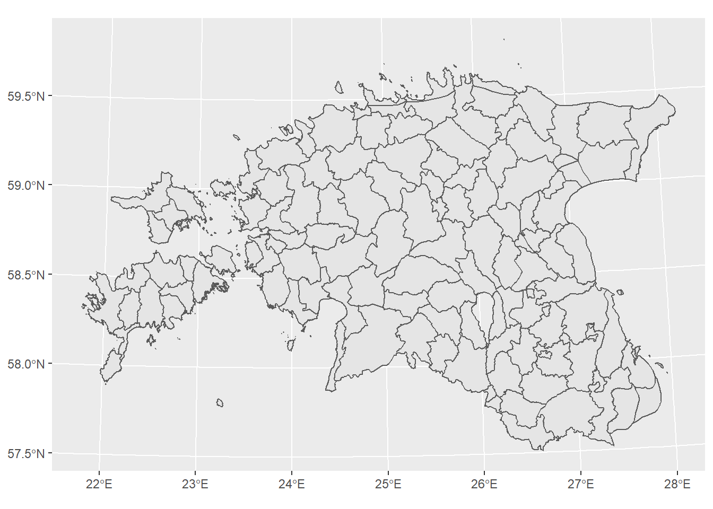
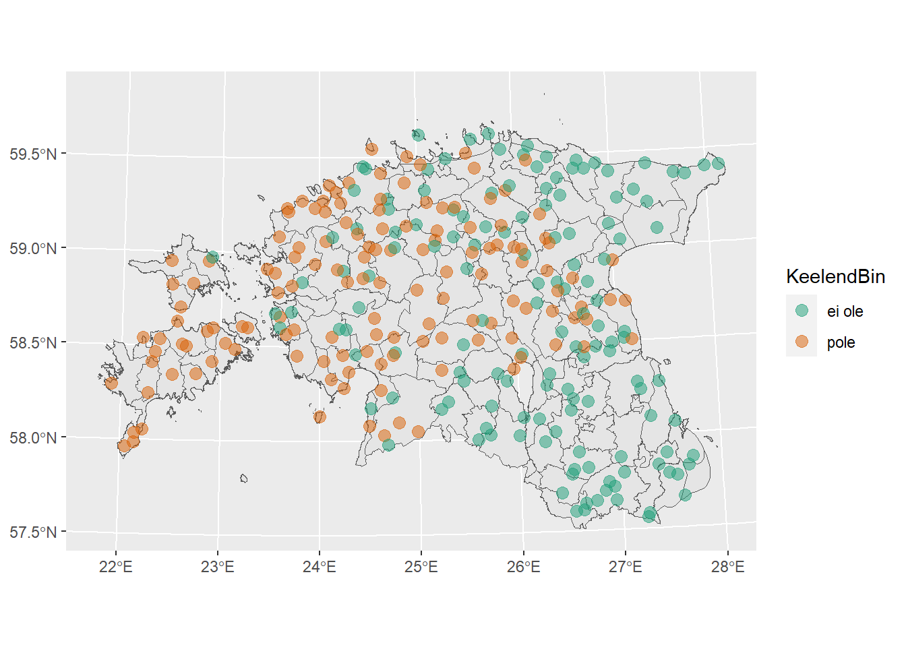
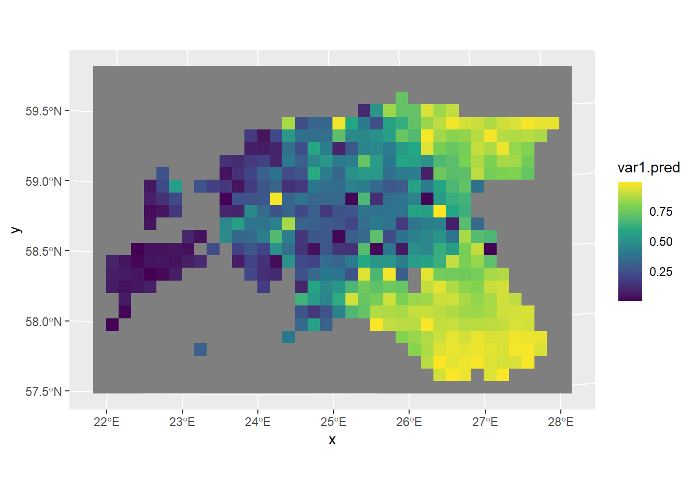

Praktikum 12 Ruumiandmete analüüs R-iga
12.1 Miks teha kaarte koodipõhiselt?
Miks teha midagi koodipõhiselt, kui saame (võrdlemisi) samasuguseid kaarte teha ka QGISis või mõnes veebirakenduses?
Erinevalt nn osuta-ja-klõpsa tarkvaradest, kus andmete analüüs toimub puhtalt programmi kasutajaliidese erinevate vidinatega suheldes ja kindlas järjekorras kuskil ikoonidel klõpsides, jääb koodi kirjutades selge jälg sellest, mida, mis järjekorras ja kuidas tehti. See aitab nii endal kui ka teistel paremini mõista, kuidas mingi konkreetse tulemuseni jõuti.
Ühtlasi võib kood tööprotsesse oluliselt lihtsustada ja kiirendada, eriti juhtudel, kus andmed võivad vahepeal muutuda või tuleb teha korduvalt sarnaseid asju. Kujutame ette näiteks olukorda, kus tegime lõputöö või publikatsiooni jaoks kaardi ning kuu aega hiljem palub juhendaja või toimetaja paari detaili kaardil muuta, ülejäänud kaart aga peaks jääma täpselt samaks. Samas oleme vahepeal enda ruumiandmetega väga palju edasi tegelenud. Millised olid täpselt kasutatud andmed, värvid, joone paksus, mõõtkava, mudeldamiseks kasutatud meetod jm? Koodis on see info kõik olemas ja see toimib sellisel juhul kui täpne “retsept” sellest, kuidas esimesel korral oma kaardini jõudsime. Niisiis pole tarvis kogu kaarditegemise protsessi uuesti läbi teha, vaid muuta koodis ära vaid vajalikud detailid.
12.2 R, RStudio ja R Markdown
Meie kasutame siin kursusel R-i versiooni 4.5.2 ja RStudio versiooni 2025.09.2, aga töötavad ka nendest pisut vanemad ja ka päris uued versioonid. Lisaks neile võiksid Windowsi kasutajad enda arvutisse installida ka programmi RTools.
Kui sa programme enda arvutisse installida ei taha või ei saa, võib kasutada ka Google Colabi (vali Runtime -> Change runtime type -> R).
R on vabavaraline väga võimas programmeerimiskeel ja rakendustarkvara andmeanalüüsiks, statistilisteks arvutusteks ning andmete visualiseerimiseks. R pakub väga palju statistilisi ja graafilisi meetodeid ning täieneb pidevalt uute tööriistade ja funktsioonidega. Üks R-i tugevaid külgi on just võimalus teha kõrge kvaliteediga jooniseid ja graafikuid. Kuna tegu on koodipõhise tarkvaraga, siis annab see kasutajatele suhteliselt vabad käed ning võimaldab kontrollida isegi kõige väiksemaid detaile.
Pakettide (package) eesmärk on lisada mingeid funktsioone. Paljud paketid tulevad R-iga kohe kaasa, aga üldiselt peab neid (eriti spetsiifilisemate ülesannete täitmiseks) juurde installima. Hetkel on R-i kodulehel cran.r-project.org üle 23 000 paketi. Pakett koosneb koodist, andmetest, dokumentatsioonist ja testidest ning seda on lihtne teistega jagada. Ka ruumiandmete analüüsimiseks, andmete töötlemiseks ja visualiseerimiseks on R-is omaette paketid, ehkki põhiosa tavalisest andmetöötlusest saab edukalt teha ka ilma lisapakette installimata.
RStudio on R-i integreeritud arenduskeskkond (integrated development environment ehk IDE). See koosneb tekstiredaktorist (1), konsoolist (2) ning tööriistadest graafikute kuvamiseks, koodi silumiseks, kogu keskkonna ja ajaloo majandamiseks jpm. RStudiost on nii vabavaraline kui ka kommertsversioon. Meie kasutame vabavaralist.

Joonis 12.1: Rstudio kasutajaliidese peamised osad
1 - skriptiaken. Siia saab kirjutada oma koodi koos kommentaaridega (kommentaari algust tähistavad trellid). Skripti saab salvestada ja teinekord uuesti kasutada (File → Save As). Skriptifaili laiend on .R. Mingi skripti rea jooksutamiseks liigu hiirega sellele reale ja vajuta kas nuppu  või vajuta klahvikombinatsiooni
või vajuta klahvikombinatsiooni Ctrl+Enter (Windowsis) / Cmd+Enter (Macis).
2 - konsool. Siia kuvatakse kogu jooksutatud skript. Lisaks saab siin ka eraldi koodi jooksutada, mis sel juhul skripti ei salvestu.
3 - töökeskkond (Environment), käskude ajalugu (History) jm. Töökeskkonnas näed kõiki mingi sessiooni jooksul loodud muutujaid (mingit infot säilitavaid objekte, nt tabeleid) ja funktsioone.
4 - failid (Files), joonised (Plots), paketid (Packages) jm. Failide all näed neid faile, mis on parasjagu sinu töökataloogis (working directory). Töökataloogi aadressi näed ka konsooli päises.
Lisaks tavalisele .R-laiendiga skriptiformaadile on üha enam kasutusel ka R Markdowni failiformaat (laiendiga .Rmd).
R Markdown on formaat tavalise teksti ning koodi kombineerimiseks ning võimaldab kirjutada täielikult reprodutseeritavaid artikleid, raamatuid, raporteid ning koostada veebilehti, interaktiivseid lahendusi jpm. Nii see juhend kui ka kogu kursuse materjalid on kirjutatud R Markdownis.
R Markdown koosnebki tavaliselt tekstist nagu see siin.
# Ning koodiplokkidest nagu see siin. Koodiplokid on Rstudios kolme ` vahel.
# Trellid teksti ees tähistavad kommentaari nagu tavalises R-i skriptifailis
# ning seda koodi jooksutamisel ei arvestata. See on lihtsalt inimesele lugemiseks.
# Kood ise tuleb kirjutada ilma trellideta.
# Näiteks allolev kood salvestab arvu 8 muutujasse nimega "lemmiknumber".
# Muutuja "lemmiknumber" tekib koodi jooksutamisel ka Environment-jaotisesse.
lemmiknumber <- 8
# Nüüd saame selle arvulise muutujaga teha näiteks liitmis- ja lahutamistehteid
lemmiknumber+1## [1] 9## [1] -2Igat koodiploki rida võib jooksutada ka eraldi (Ctrl+Enter/Cmd+Enter).
Laadime Moodle’ist alla tänase praktikumi failid, pakime need lahti ning asetame need failid enda selle kursuse kausta. Avame Rstudio ning seal faili ruumiandmed_r.Rmd, valides ülevalt vasakust nurgast File → Open file.
12.3 Pakettide installimine ja töökataloogi seadistamine
Kõigepealt installime vajalikud paketid. Selleks jooksutame allolevat koodi. Kui kasutad R-i skripti, siis tuleb allolevad read (ja kõik edaspidised koodiread) lihtsalt skriptiaknasse kopeerida ning neid Ctrl+Enter/Cmd+Enter abil jooksutada. R Markdownis saab koodi jooksutada ja nii, kui klikid koodiploki paremal üleval nurgas rohelisele nupule (Run current chunk). Selle tulemusena tõmbab R kõik vajalikud paketid ja installib need. Sellega võib minna natuke aega. Kui protsess on lõppenud, siis kaob konsooli paremas nurgas väike punane STOP-märk. Kui konsooli trükitakse vahepeal punast teksti, mis ei alga sõnaga Error:, ei tasu selle pärast muretseda. R lihtsalt teavitab sind sellest, millega ta parajasti tegeleb.
Selleks, et installitud pakettide funktsioone kasutama hakata, tuleb need paketid ka laadida. Selleks on käsk library(). Paketid tuleb installida ainult ühe korra, aga laadida tuleb need alati uuesti, kui oled vahepeal Rstudio sulgenud.
Kui paketid on laaditud, siis teeme R Markdowni failis veel ühe väikese muudatuse, et faili vaatamine oleks mugavam. Nimelt ei peaks koodi jooksutamise tulemust kohe siin koodi all näitama. Selleks valime Tools → Global options → R Markdown ning võtame ära linnukese valiku Show output inline for all R Markdown documents eest. Seejärel vajutame all servas OK.
Viimase asjana paneme paika töökataloogi ehk Working directory. Siin kasutame seda peamiselt selleks, et saaks andmeid lugeda lähtuvalt nende asukohast seoses meie R Markdowni faili asukohaga. Sellepärast tulekski see fail panna samasse kausta, kus on ka kaust data ülejäänud Moodle’ist alla laetud failidega. Working directory seadistamiseks saab valida ülevalt menüüribalt Session → Set working directory → To Source File Location. Seejärel jooksutame allolevat koodiplokki. Kui kõik on õigesti, peaks tulemuseks olema meie praeguse R Markdowni faili asukoht.
Kui kopeerid koodiridu R-i skriptifaili, siis hoolitse selle eest, et sisseloetavate failide kaust data oleks funktsiooniga getwd() näidatud kaustas.
12.4 Andmete sisselugemine
Andmete sisselugemiseks tuleb kasutada vastavalt andmestiku tüübile funktsioone, millest enamik sisaldab mingil kujul sõna read. Tabelandmestiku puhul nt read.delim() ja vektorkujul ruumiandmete puhul st_read() (paketist sf).
kihelkonnad <- st_read("data/kihelkonnad/kihelkonnad.shp")
# Seda koodi võiks lugeda järgmiselt:
# ava meie praeguse R Markdowni failiga samas kaustas olevast kaustast data/kihelkonnad/
# fail kihelkonnad.shp ja anna sellele kihile R-is nimeks kihelkonnad.Näeme, et sisse loetakse multipolügooni tüüpi ruumiandmed, mis on Eesti 1997. aasta koordinaatide referentssüsteemis. Kõige läänepoolsem x-koordinaat on 369020.1, kõige idapoolsem 739155.1; kõige lõunapoolsem y-koordinaat on 6377141, kõige põhjapoolsem 6634006. Kuna tegemist on projitseeritud CRS-iga, on koordinaadid esitatud meetrites.
Atribuuttabelis on 120 rida ja 11 tulpa.
Loeme sisse ka atlase punktikihi, kus on 279 rida ja 13 tulpa.
Nimetame mõne tulba ümber.
names(kihelkonnad) # küsi atributtabeli tulbanimesid (pane tähele, et andmestikus on ka tulp 'geometry'!)## [1] "ID" "Parish_id" "Name" "Ger_name" "Comment"
## [6] "Problem" "Shape_Leng" "Dialect_en" "Shape_Le_1" "Shape_Area"
## [11] "Dialect_et" "geometry"Detailset infot kihi koordinaatide referentssüsteemi kohta saame küsida käsuga st_crs().
## Coordinate Reference System:
## User input: Estonian Coordinate System of 1997
## wkt:
## PROJCRS["Estonian Coordinate System of 1997",
## BASEGEOGCRS["EST97",
## DATUM["Estonia 1997",
## ELLIPSOID["GRS 1980",6378137,298.257222101,
## LENGTHUNIT["metre",1]]],
## PRIMEM["Greenwich",0,
## ANGLEUNIT["degree",0.0174532925199433]],
## ID["EPSG",4180]],
## CONVERSION["Estonian National Grid",
## METHOD["Lambert Conic Conformal (2SP)",
## ID["EPSG",9802]],
## PARAMETER["Latitude of false origin",57.5175539305556,
## ANGLEUNIT["degree",0.0174532925199433],
## ID["EPSG",8821]],
## PARAMETER["Longitude of false origin",24,
## ANGLEUNIT["degree",0.0174532925199433],
## ID["EPSG",8822]],
## PARAMETER["Latitude of 1st standard parallel",59.3333333333333,
## ANGLEUNIT["degree",0.0174532925199433],
## ID["EPSG",8823]],
## PARAMETER["Latitude of 2nd standard parallel",58,
## ANGLEUNIT["degree",0.0174532925199433],
## ID["EPSG",8824]],
## PARAMETER["Easting at false origin",500000,
## LENGTHUNIT["metre",1],
## ID["EPSG",8826]],
## PARAMETER["Northing at false origin",6375000,
## LENGTHUNIT["metre",1],
## ID["EPSG",8827]]],
## CS[Cartesian,2],
## AXIS["northing (X)",north,
## ORDER[1],
## LENGTHUNIT["metre",1]],
## AXIS["easting (Y)",east,
## ORDER[2],
## LENGTHUNIT["metre",1]],
## USAGE[
## SCOPE["Topographic mapping (large scale)."],
## AREA["Estonia - onshore and offshore."],
## BBOX[57.52,20.37,60,28.2]],
## ID["EPSG",3301]]Koordinaatide referentssüsteemi muutmiseks saame kasutada funktsiooni st_transform(). Teeme näiteks uue kihelkondade kihi, mille koordinaatide referentssüsteem on EPSG:4326 koodiga (vt https://epsg.io/).
kihelkonnad_4326 <- st_transform(kihelkonnad, crs = 4326) # uus kihelkondade kiht, mille crs on EPSG:4326
st_crs(kihelkonnad_4326) # vaatame uuesti CRS-i infot## Coordinate Reference System:
## User input: EPSG:4326
## wkt:
## GEOGCRS["WGS 84",
## ENSEMBLE["World Geodetic System 1984 ensemble",
## MEMBER["World Geodetic System 1984 (Transit)"],
## MEMBER["World Geodetic System 1984 (G730)"],
## MEMBER["World Geodetic System 1984 (G873)"],
## MEMBER["World Geodetic System 1984 (G1150)"],
## MEMBER["World Geodetic System 1984 (G1674)"],
## MEMBER["World Geodetic System 1984 (G1762)"],
## MEMBER["World Geodetic System 1984 (G2139)"],
## MEMBER["World Geodetic System 1984 (G2296)"],
## ELLIPSOID["WGS 84",6378137,298.257223563,
## LENGTHUNIT["metre",1]],
## ENSEMBLEACCURACY[2.0]],
## PRIMEM["Greenwich",0,
## ANGLEUNIT["degree",0.0174532925199433]],
## CS[ellipsoidal,2],
## AXIS["geodetic latitude (Lat)",north,
## ORDER[1],
## ANGLEUNIT["degree",0.0174532925199433]],
## AXIS["geodetic longitude (Lon)",east,
## ORDER[2],
## ANGLEUNIT["degree",0.0174532925199433]],
## USAGE[
## SCOPE["Horizontal component of 3D system."],
## AREA["World."],
## BBOX[-90,-180,90,180]],
## ID["EPSG",4326]]Joonistame kaardid, et võrrelda kaht koordinaatide referentssüsteemi. Kasutame paketti ggplot2, mis laaditakse automaatselt koos paketiga tidyverse, ning funktsiooni geom_sf(), mis laaditakse koos paketiga sf, et joonistada ruumiandmete kihti.


Kaks kaarti paistavad esmapilgul sarnased, ent pane tähele, et esimesel, projitseeritud kaardil on jooned veidi kõverdunud.
12.4.1 Harjutus 1
Loe sisse murdeatlase ei ole/pole kiht data/atlas.gpkg ja nimeta sisseloetud andmekiht nimega atlas.
- Millist CRS-i on kasutatud?
- Kui palju objekte/andmepunkte kihil on?
- Millised andmepunkte kirjeldavad atribuudid on atributttabelis?
- Joonista atlase punktidest kaart.
- Lisa kaardil punktikihi alla kihelkondade kiht (vihje: kui kasutame kaht ruumiandmete kihti, siis saame liita joonisele vastavalt ka kaks
geom_sf()kihti).
12.4.2 Harjutus 2
Loe sisse maailma riikide polügoonid Natural Earth lehelt (large scale, 1:10m, cultural, admin 0). Paki allalaetud kaust lahti ning loe ruumiandmete shapefile R-i. Nimeta sisseloetud kiht nimega riigid.
- Millist CRS-i on kasutatud?
- Kui palju objekte/andmepunkte kihil on?
- Millised andmepunkte kirjeldavad atribuudid on atribuuttabelis?
- Joonista riikide polügoonidest kaart.
- Loo uus riikide kiht, kus CRS oleks Eesti koordinaatide referentssüsteem EPSG:3301. Joonista kaart. Mis juhtub?
12.4.3 Andmete sisselugemine CSV-failist
Nagu öeldud, saab tavaliste tabelite (st mitteruumiandmete) sisselugemiseks kasutada näiteks funktsiooni read.delim(), aga read-käskusid on tegelikult väga palju (trüki nt konsooli sisse read ja vajuta tabulaatorit, et näha võimalikke variante). Loeme sisse murdekorpuse sagedusandmed.
# tulpade eraldaja (sep) on semikoolon
# faili kodeering (encoding) on "UTF-8"
korpus <- read.delim("data/eiole_pole_mk_props.csv", sep = ";", encoding = "UTF-8")Vaatame esimesi ridu.
## Murre Murrak eiole pole
## 1 Kirde Jõh 0.9117647 0.08823529
## 2 Kirde Iis 0.9062500 0.09375000
## 3 Ida Pal 0.7191011 0.28089888
## 4 Kesk Äks 0.9142857 0.08571429
## 5 Kesk Amb 0.7530864 0.24691358
## 6 Kesk Juu 0.5405405 0.4594594612.5 Kaartide tegemine
Paketiga ggplot2 saab teha nii kõiksugu jooniseid kui ka kaarte. Pakett põhineb nn graafikagrammatika (Grammar of Graphics) kontseptsioonil, mis võimaldab luua jooniseid erinevate komponentide ja kihtide kombineerimise teel. Sisuliselt toimub komponentide lisamine kihtidena pisut sarnaselt sellele, mida oleme siiani QGISis teinud. Kõigepealt lisatakse aluskiht, seejärel mingi sisukiht ning seejärel kõikvõimalikud märkused ja lisad (ehkki kihtide lisamise järjekord ei ole väga rangelt määratud).
Proovime paketi ggplot2 abil teha oma sisseloetud andmetest kaarte.
Värvime maakondade polügoonid helehalli värvi (fill), polügoonide piirjooned samuti heledamaks halliks (color). Punktid teeme läbipaistvamaks (alpha) ja pisut suuremaks (size) ja kasutame halli taustaga kaarditeema asemel mustvalget teemat (theme_bw()). Värvinimesid ja HEX-värvikoode, mida saab kasutada, leiad näiteks siit.
ggplot() +
geom_sf(data = kihelkonnad, fill = "grey90", color = "grey70") +
geom_sf(data = atlas, alpha = 0.5, size = 3) +
theme_bw()
Lisame joonisele ka pealkirja (title) ja viite kasutatud andmetele (caption). Lisame ka mõõtkava (annotation_scale paketist ggspatial). Mõõtkava võib paigutada nt alumisse vasakusse (bl), alumisse paremasse (br), ülemisse vasakusse (ul) või ülemisse paremasse nurka (ur).
ggplot() +
geom_sf(data = kihelkonnad, fill = "grey90", color = "grey70") +
geom_sf(data = atlas, alpha = 0.5, size = 3) +
theme_bw() +
labs(title = "Murdeatlase punktid", caption = "Andmed: EKI (2015), Andrus Saareste (1955)") +
annotation_scale(location = "bl")
Praegu oleme kujutanud kaardil lihtsalt ruumiandmeid (kus mingid polügoonid või punktid asuvad?), aga ei kajasta kuidagi visuaalselt andmestiku tunnuseid. Juhul, kui mõni kujunduselement (nt värv, suurus, kuju, läbipaistvus) on seotud atribuuttabeli tunnusega, tuleb selle tunnuse nimi ja seda kujutav visuaalne atribuut tuua välja geom()-kihil aes()-funktsiooni sees (aesthetics).
# Värvime kihelkondade polügoonid vastavalt murdeala nimele
ggplot() +
geom_sf(data = kihelkonnad, aes(fill = Dialect_et))
ggplot() +
geom_sf(data = kihelkonnad) +
geom_sf(data = atlas, alpha = 0.5, size = 3, aes(color = KeelendBin))
# Vrd
# ggplot() +
# geom_sf(data = kihelkonnad) +
# geom_sf(data = atlas, alpha = 0.5, size = 3, color = "red")Kui mõni kujunduselement (alpha, fill, color, size, shape vm) on niisiis niisama geom_sf() funktsiooni sees, kehtib see kõikidele kihi objektidele ühtmoodi (nt kõik punktid on punased). Kui see on aga omakorda veel aes()-funktsiooni sees, eristatakse objektide kujundust vastavalt mingile andmestiku atribuudile/tunnusele (nt ühed punktid on punased, teised sinised, vastavalt sellele, kas tegemist on ei ole või pole punktiga).
Atribuuttabeliga seotud kujunduselementide välimuse muutmiseks (enamasti nt värvipaleti vahetamiseks) saab kasutada eraldi scale_...-funktsioone. Näiteks täitevärvi (fill) värvipaletti saab vahetada funktsioonidega, mis algavad scale_fill_..., ilma täitevärvita sümboli või äärejoone (color) värvipaletti saab vahetada funktsioonidega, mis algavad scale_color_....
Värvime maakonnad nt Viridise diskreetse, st mittepideva värviskaalaga (_d) ja punktid Breweri kvalitatiivsete (st mittearvuliste) tunnuste jaoks mõeldud värvidega.
# Vahetame maakondade värviskaalat
ggplot() +
geom_sf(data = kihelkonnad, aes(fill = Dialect_et)) +
scale_fill_viridis_d()
# Vahetame punktide värviskaalat
ggplot() +
geom_sf(data = kihelkonnad) +
geom_sf(data = atlas, alpha = 0.5, size = 3, aes(color = KeelendBin)) +
scale_color_brewer(type = "qual", palette = "Dark2")
Võime määrata värvid ka käsitsi, nt scale_color_manual(values = c("pink", "green")).
12.6 Andmete valimine
Ruumiandmete filtreerimiseks on meil kasutada dplyr pakett, mis võimaldab paari funktsiooni abil suure osa andmetöötlusest ära teha ja mis saab laaditud koos tidyverse’i paketi laadimisega.
Filtreerime kihelkondade kihilt ainult saarte murde alla kuuluvad polügoonid. Selleks võime esmalt küsida, mis on üldse kihelkondade kihi tulbanimed.
## [1] "ID" "Parish_id" "Name" "German_name" "Comment"
## [6] "Problem" "Shape_Leng" "Dialect_en" "Shape_Le_1" "Shape_Area"
## [11] "Dialect_et" "geometry"Nüüd filtreerime kihelkondade kihilt need read ja need kihelkondade polügoonid, kus tulbas Dialect_et on väärtus Saarte.
## Simple feature collection with 18 features and 11 fields
## Geometry type: MULTIPOLYGON
## Dimension: XY
## Bounding box: xmin: 369020.1 ymin: 6404452 xmax: 502423.3 ymax: 6551381
## Projected CRS: Estonian Coordinate System of 1997
## First 10 features:
## ID Parish_id Name German_name
## 1 2 Muh Muhu Mohn
## 2 3 Khn Kihnu Kühnö
## 3 4 Ruh Ruhnu Runö
## 4 5 Jaa Jaani St. Johannis
## 5 6 Vll Valjala Wolde
## 6 7 Mus Mustjala Mustel
## 7 8 Kaa Kaarma Karmel
## 8 9 Kär Kärla Kergel
## 9 10 Khk Kihelkonna Kielkond
## 10 11 Jäm Jämaja Jamma
## Comment
## 1 Piirid kontrollitud
## 2 Ei olnud omaette kihelkond, ent loetakse siiski etnograafiliselt eraldi piirkonnaks
## 3 Kontrollitud
## 4 Katastripiiride põhjal üle kontrollitud (P. Päll, 2013-01-15)
## 5 Katastripiiride põhjal üle kontrollitud (P. Päll, 2013-01-15)
## 6 Katastripiiride põhjal üle kontrollitud (P. Päll, 2013-01-15)
## 7 Katastripiiride põhjal üle kontrollitud (P. Päll, 2013-01-15)
## 8 Katastripiiride põhjal üle kontrollitud (P. Päll, 2013-01-15)
## 9 Katastripiiride põhjal üle kontrollitud (P. Päll, 2013-01-15)
## 10 Katastripiiride põhjal üle kontrollitud (P. Päll, 2013-01-15)
## Problem Shape_Leng Dialect_en Shape_Le_1 Shape_Area Dialect_et
## 1 <NA> 166662.20 Insular 152068.60 208717779 Saarte
## 2 <NA> 57101.22 Insular 43719.90 17486775 Saarte
## 3 <NA> 26172.08 Insular 22586.64 11903885 Saarte
## 4 <NA> 78056.11 Insular 72996.58 120846149 Saarte
## 5 <NA> 134426.80 Insular 125282.86 210185513 Saarte
## 6 <NA> 114295.25 Insular 109866.84 226931935 Saarte
## 7 <NA> 170224.11 Insular 160600.13 373623450 Saarte
## 8 <NA> 77964.86 Insular 77959.20 228263844 Saarte
## 9 <NA> 394865.11 Insular 364986.01 459481464 Saarte
## 10 <NA> 113085.92 Insular 95051.81 142890724 Saarte
## geometry
## 1 MULTIPOLYGON (((463501.9 64...
## 2 MULTIPOLYGON (((500539.8 64...
## 3 MULTIPOLYGON (((456664 6404...
## 4 MULTIPOLYGON (((445725.1 64...
## 5 MULTIPOLYGON (((437423 6465...
## 6 MULTIPOLYGON (((401102.4 64...
## 7 MULTIPOLYGON (((415976.4 64...
## 8 MULTIPOLYGON (((404232.4 64...
## 9 MULTIPOLYGON (((375155.3 64...
## 10 MULTIPOLYGON (((383088.7 64...Nn toru %>% suunab mingi objekti või väljundi uue funktsiooni sisse. Praegusel juhul võtsime niisiis kihelkondade kihi ja selle suunasime filter()-funktsiooni. Võime filtreerimise väljundi omakorda suunata järgmisse funktsiooni, näiteks joonise tegemise funktsiooni. Sellisel juhul pole geom_sf() funktsioonis vaja eraldi andmestikku täpsustada, sest toru ütleb ära, et andmestik tuleb eelnevate käskude väljundist.

Teine variant on salvestada filtreeritud andmed eraldi muutujasse ja kasutada seejärel ggplot() funktsiooni nii nagu ennegi.
kihelkonnad %>% filter(Dialect_et == "Saarte") -> saarte_murre
# saame suunamist teha ka vasakult paremale ->
# sama tulemuse saaks koodiga
# saarte_murre <- kihelkonnad %>% filter(Dialect_et == "Saarte")
ggplot() +
geom_sf(data = saarte_murre)
Ridade filtreerimisel töötavad sarnased operaatorid, mida oleme näinud ka QGISis:
>on suurem kui
<on väiksem kui>=on suurem kui või võrdne
<=on väiksem kui või võrdne
==on võrdne
!=ei ole võrdne
%in%kuulub hulka
Valime atlase punktikihilt ainult pole punktid ja kuvame need kihelkondade kaardil. Kihelkondade kiht peab tulema enne punktikihti, et see punkte ära ei kataks.
## [1] "ANIMI" "ONIMI" "MNIMI" "SaKhkLyh" "SaKhk"
## [6] "SaKyla" "SaKJEes" "SaKJPrk" "SaKJSynd" "Keelend"
## [11] "SaKom" "KeelendBin" "KeelendNum" "geom"## Simple feature collection with 6 features and 13 fields
## Geometry type: POINT
## Dimension: XY
## Bounding box: xmin: 425475.3 ymin: 6507561 xmax: 535475 ymax: 6590791
## Projected CRS: Estonian Coordinate System of 1997
## ANIMI ONIMI MNIMI SaKhkLyh SaKhk
## 1 Leibre küla Vigala vald Rapla maakond Vig Vigala
## 2 Paldiski linn Paldiski linn Harju maakond HMd Harju-Madise
## 3 Haabersti linnaosa Tallinn Harju maakond Kei Keila
## 4 Muraste küla Harku vald Harju maakond Kei Keila
## 5 Ilmandu küla Harku vald Harju maakond Kei Keila
## 6 Selja küla Käina vald Hiiu maakond Käi Käina
## SaKyla SaKJEes SaKJPrk SaKJSynd Keelend SaKom
## 1 Leilavere <NA> <NA> NA ei (äi) ole <NA>
## 2 Leetse <NA> <NA> NA põle <NA>
## 3 Kakumäe <NA> <NA> NA pole <NA>
## 4 Muraste <NA> <NA> NA ei (äi) ole <NA>
## 5 Ilmandu <NA> <NA> NA ei (äi) ole <NA>
## 6 Selja <NA> <NA> NA pole T. s. Eduard Mäehans 1890
## KeelendBin KeelendNum geom
## 1 ei ole 1 POINT (523059.3 6507561)
## 2 pole 0 POINT (505646.8 6579844)
## 3 pole 0 POINT (535475 6586658)
## 4 ei ole 1 POINT (525130.3 6590791)
## 5 ei ole 1 POINT (527089.1 6589553)
## 6 pole 0 POINT (425475.3 6522034)atlas %>% filter(KeelendBin == "pole") -> pole_punktid
ggplot() +
geom_sf(data = kihelkonnad, fill = "grey90", color = "grey70") +
geom_sf(data = pole_punktid, alpha = 0.5, color = "darkblue", size = 3) +
theme_bw()
Atlase punktikihi puhul meil murrete infot teada ei ole (on ainult maakondade info). Selleks, et kuvada korraga nt keskmurde kihelkondi JA keskmurde atlase punkte, peaksime atlase punktidele nende kihelkonna info põhjal leidma ka murrete nimed.
12.6.1 Harjutus 3
Vali riikide kihilt
- ainult riigid, mille rahvaarv on üle 100 miljoni ja kuva need kaardil (atribuut
POP_EST), värvi polügoonid vastavalt maailmajaole (atribuutREGION_UN);
- ainult Euroopa riigid ja kuva need kaardil (atribuut
REGION_UN), värvi polügoonid vastavalt rahvaarvule (atribuutPOP_EST);
- ainult Euroopa riigid, mille rahvaarv on üle 100 miljoni, ja kuva need kaardil;
- ainult Eesti polügoon (atribuut
NAME) ja salvesta see eraldi objekti nimegaeesti.
12.7 Andmestike ühendamine
12.7.1 Ruumiandmed + ruumiandmed
Ruumiandmete omavahel ühendamiseks (st puhtalt koordinaadipõhiseks andmete ühendamiseks) saab kasutada funktsiooni st_join() (paketist sf). Selleks, et ühendamisel säiliks andmestiku vektortüübina punktandmestik, mitte polügoonid, peaksime vasakule poole panema atlase andmestiku nime ja paremale kihelkondade oma.
## Simple feature collection with 6 features and 24 fields
## Geometry type: POINT
## Dimension: XY
## Bounding box: xmin: 425475.3 ymin: 6507561 xmax: 535475 ymax: 6590791
## Projected CRS: Estonian Coordinate System of 1997
## ANIMI ONIMI MNIMI SaKhkLyh SaKhk
## 1 Leibre küla Vigala vald Rapla maakond Vig Vigala
## 2 Paldiski linn Paldiski linn Harju maakond HMd Harju-Madise
## 3 Haabersti linnaosa Tallinn Harju maakond Kei Keila
## 4 Muraste küla Harku vald Harju maakond Kei Keila
## 5 Ilmandu küla Harku vald Harju maakond Kei Keila
## 6 Selja küla Käina vald Hiiu maakond Käi Käina
## SaKyla SaKJEes SaKJPrk SaKJSynd Keelend SaKom
## 1 Leilavere <NA> <NA> NA ei (äi) ole <NA>
## 2 Leetse <NA> <NA> NA põle <NA>
## 3 Kakumäe <NA> <NA> NA pole <NA>
## 4 Muraste <NA> <NA> NA ei (äi) ole <NA>
## 5 Ilmandu <NA> <NA> NA ei (äi) ole <NA>
## 6 Selja <NA> <NA> NA pole T. s. Eduard Mäehans 1890
## KeelendBin KeelendNum ID Parish_id Name German_name
## 1 ei ole 1 37 Vig Vigala Fickel
## 2 pole 0 27 HMd Harju-Madise St. Matthias
## 3 pole 0 26 Kei Keila Kegel
## 4 ei ole 1 26 Kei Keila Kegel
## 5 ei ole 1 26 Kei Keila Kegel
## 6 pole 0 46 Käi Käina Keinis
## Comment
## 1 Kihelkonnapiirid mõisapiiride järgi üle kontrollitud (Peeter Päll, 2012-11-26)
## 2 Kihelkonnapiirid mõisapiiride järgi üle kontrollitud (Peeter Päll, 2012-11-12) + Ris piir
## 3 Kihelkonnapiirid mõisapiiride järgi üle kontrollitud (Peeter Päll, 2012-11-12)
## 4 Kihelkonnapiirid mõisapiiride järgi üle kontrollitud (Peeter Päll, 2012-11-12)
## 5 Kihelkonnapiirid mõisapiiride järgi üle kontrollitud (Peeter Päll, 2012-11-12)
## 6 Kihelkonnapiirid mõisapiiride järgi üle kontrollitud (Peeter Päll, 2012-11-27)
## Problem Shape_Leng Dialect_en Shape_Le_1 Shape_Area Dialect_et
## 1 <NA> 109783.2 Western 109656.3 361383036 Lääne
## 2 <NA> 112767.7 Mid 110349.6 173357161 Kesk
## 3 <NA> 145259.7 Mid 142289.8 627679360 Kesk
## 4 <NA> 145259.7 Mid 142289.8 627679360 Kesk
## 5 <NA> 145259.7 Mid 142289.8 627679360 Kesk
## 6 <NA> 125610.6 Insular 119959.6 199587278 Saarte
## geom
## 1 POINT (523059.3 6507561)
## 2 POINT (505646.8 6579844)
## 3 POINT (535475 6586658)
## 4 POINT (525130.3 6590791)
## 5 POINT (527089.1 6589553)
## 6 POINT (425475.3 6522034)Funktsioon st_join() vaatab niisiis iga punkti puhul, millise kihelkonna polügooni sisse see punkt jääb, ning lisab punktile vastava kihelkonna info (sh info selle kohta, millise murdeala alla kihelkond kuulub).
Kuvame kaardil nüüd keskmurde kihelkondade polügoone ja keskmurde piiridesse jäävaid murdeatlase punkte.
kesk_khk <- kihelkonnad %>% filter(Dialect_et == "Kesk")
kesk_atlas <- atlas_khk %>% filter(Dialect_et == "Kesk")
ggplot() +
geom_sf(data = kesk_khk) +
geom_sf(data = kesk_atlas) +
labs(title = "Keskmurde kihelkonnad ja murdeatlase punktid")
Võtame kaardilt ära ka koordinaadistiku ja värvime tausta tumehalliks
ggplot() +
geom_sf(data = kesk_khk) +
geom_sf(data = kesk_atlas, alpha = 0.5, size = 3, aes(color = KeelendBin)) +
labs(title = "Keskmurde kihelkonnad ja murdeatlase punktid") +
theme(panel.grid = element_blank(), # kaota koordinaadistik
axis.text = element_blank(), # kaota telgede tekst
axis.ticks = element_blank(), # kaota telgede kriipsud
panel.background = element_rect(fill = "grey40")) # lisa joonisele taust, mis oleks täidetud halli värviga
Väiksema ala puhul võime punktide asemel kuvada ehk hoopis konkreetsete keelendite silte.
ggplot() +
geom_sf(data = kesk_khk) +
geom_sf_text(data = kesk_atlas, aes(label = Keelend), size = 3) + # sildid
labs(title = "Keskmurde kihelkonnad ja murdeatlase keelendid") +
theme(panel.grid = element_blank(),
axis.text = element_blank(),
axis.ticks = element_blank(),
axis.title = element_blank(), # kaotame x- ja y- telje pealkirjad
panel.background = element_rect(fill = "grey40"))
12.7.2 Ruumiandmed + mitteruumiandmed
Ruumiandmete ja mitteruumiandmete ühendamiseks saab kasutada muid ..._join()-funktsioone (paketist dplyr, mis peaks laaditama automaatselt, kui laadid paketi tidyverse). Näiteks left_join() ühendab kaks andmestikku nii, et uude andmestikku jäävad vasakpoolsest andmestikust kõik read ja parempoolsest andmestikust need read, mis tal on vasakpoolsega ühised. Säilib ka vasakpoolsete andmete andmetüüp (nt kui vasakpoolne andmestik on ruumiandmete andmestik ja parempoolne tavaline tabel, on ühendamisel tekkiv andmestik ka ruumiandmete andmestik). Teiste join-meetodite kohta saad lugeda, kui trükid konsooli ?join ja vajutad Enterit.
Kui tahame ühendada nüüd kihelkondade polügoonide andmeid (kihelkonnad) ja murdekorpuse sagedusandmeid (korpus), peame kõigepealt tegema kindlaks, millised on need tulbanimed, mis mõlemas andmestikus sisaldavad samu väärtusi.
## [1] "ID" "Parish_id" "Name" "German_name" "Comment"
## [6] "Problem" "Shape_Leng" "Dialect_en" "Shape_Le_1" "Shape_Area"
## [11] "Dialect_et" "geometry"## [1] "Murre" "Murrak" "eiole" "pole"Ühendame kihelkondade kihi tulba Parish_id põhjal ja korpuse kihi tulba Murrak põhjal. Mõlemad sisaldavad kihelkondade lühendeid.
Värvime nüüd kihelkonnad vastavalt sellele, kui suur on mingis kihelkonnas pole kasutamise osakaal.

Valime värviskaala, kus helesinine märgib väikest osakaalu, tumesinine suurt osakaalu ja vahepealsed väärtused jäävad nende vahele. Kihelkonnad, kust andmed puuduvad, värvime helehalliks.
ggplot() +
geom_sf(data = yhendatud, aes(fill = pole)) +
scale_fill_gradient(low = "lightblue", high = "dodgerblue4", na.value = "grey80") +
theme_bw()
12.7.3 Ruumiobjektide ühendamine mingi atribuudi alusel
Kui tahame aga näiteks ühendada hoopis kihelkondi atribuudi Dialect_et põhjal murdealadeks, saame seda teha funktsioonide group_by() ja summarise() abil (paketist tidyverse).
kihelkonnad %>% # võta kihelkondade kiht
group_by(Dialect_et) %>% # grupeeri kihelkonnad murdeala põhjal
summarise() -> murded # ühenda iga murdeala kihelkonnad üheks polügooniks ning salvesta tulemus objekti nimega 'murded'
# Teeme joonise
ggplot() +
geom_sf(data = murded, aes(fill = Dialect_et))
12.8 Jooniste eksportimine
Kaarte saab eksportida paremal olevast Plots aknast, valides Export (see toimib juhul, kui oled enne määranud, et R Markdowni koodiplokkide väljundeid ei kuvataks markdowni faili sees; vastasel juhul ei kuvata Plots jaotises midagi). Samuti võib koodi lõppu lisada funktsiooni ggsave("failinimi.png"). Seejärel salvestatakse fail Working directory asukohta, mida saad vaadata funktsiooniga getwd().
ggplot() +
geom_sf(data = yhendatud, aes(fill = pole)) +
scale_fill_gradient(low = "lightblue", high = "dodgerblue4", na.value = "grey80") +
theme_bw()
ggsave("minu_kaart.png")Veidi rohkem kontrolli joonise parameetrite üle saad, kui kasutad png(), tiff() vmt funktsiooni, lisad selle järele oma joonise koodi ja kõige lõppu dev.off().
12.9 Geostatistika: interpoleerimine
Ka R-is võib kasutada erinevaid geostatistika meetodeid. Näiteks kui soovime interpoleerida ei ole/pole atlase andmetest rasterkihi, milles iga piksel väljendab ei ole esinemise tõenäosust, saame kasutada selleks näiteks pakette stars ja gstat.
Esmalt peame aga looma keelendi väärtuse (ei ole või pole) põhjal uue binaarse arvtunnuse, kus üks variant (nt ei ole) oleks kodeeritud 1-ga ja teine (nt pole) 0-ga.
##
## 0 1
## 138 141Järgmiseks peame määrama interpoleerimise tulemusel saadava rastri ulatuse (nt kas ennustame ei ole kasutust ka Eestist väljapoole?) ja piksli küljepikkuse. Määrame Eestit katva ala kihelkondade kihi põhjal ning ala suuruseks 10 x 10 km (= 10 000 m2).
# install.packages("stars")
library(stars)
st_bbox(kihelkonnad) %>%
st_as_stars(dx = 10000) %>%
st_crop(kihelkonnad) -> est_gridKasutame kõige lihtsamat interpoleerimise meetodit, IDW-d (Inverse Distance Weighting, vt praktikum 10).
## [inverse distance weighted interpolation]ggplot() +
geom_sf(data = kihelkonnad) +
geom_stars(data = result, aes(fill = var1.pred, x = x, y = y)) +
scale_fill_viridis_c()
12.10 Veebikaardid
Veebikaartide tegemiseks saame ka R-is kasutada näiteks paketi [leaflet] võimalusi.
Kuvame esmalt lihtsalt mingit aluskaarti.
Leafletiga veebikaardile kihtide lisamiseks tuleb kihtidele määrata koordinaatide referentssüsteemiks EPSG:4326.
atlas_4326 <- st_transform(atlas, crs = 4326)
leaflet(atlas_4326) %>%
addCircles(color = "red") %>% # lisame atlase punktid
addTiles() %>%
setView(25.576, 58.807, zoom = 7)Värvime nüüd punktid vastavalt ei ole või pole variandile ning lisame popupid.
pal <- colorFactor(palette = c("darkblue", "orange3"), domain = atlas_4326$KeelendBin)
leaflet(atlas_4326) %>%
addCircles(color = ~pal(KeelendBin),
popup = ~paste(
"<b>Küla:</b>", SaKyla, "<br/>",
"<b>Keelend:</b>", Keelend, "<br/>"
)) %>%
addTiles() %>%
setView(25.576, 58.807, zoom = 7)Leafleti interaktiivseid kaarte saab lisada ka R Markdowni dokumentidesse, Shiny rakendustesse, slaididele jne.
12.11 Geokodeerimine
R-is saab ka andmeid geokodeerida (= määrata kohanimedele või aadressidele koordinaadid). Selleks on erinevaid pakette, näiteks
tidygeocoder,
nominatimlite,
osmdata.
Katsetame siin paketti tidygeocoder.
Paketi põhifunktsioon on geocode(), mis nõuab sisendiks data.frame tabelformaadis andmeid. Teeme näiteks tabeli, kus oleks neli rida, igal real üks (eri üldistusastmega) aadress:
- Jakobi 2, Tartu
- Ülikooli 18, Tartu
- Tartu
- Eesti
data.frame(Koht = c("Jakobi 2, Tartu", "Ülikooli 18, Tartu", "Tartu", "Eesti")) -> aadresside_df
aadresside_df %>%
geocode(address = Koht, method = "osm", lat = latitude, long = longitude) -> geokodeeritud_df
head(geokodeeritud_df)## # A tibble: 4 × 3
## Koht latitude longitude
## <chr> <dbl> <dbl>
## 1 Jakobi 2, Tartu 58.4 26.7
## 2 Ülikooli 18, Tartu 58.4 26.7
## 3 Tartu 58.4 26.7
## 4 Eesti 58.8 25.3Kuna geokodeerimise tulemus on tavaline andmetabel, milles koordinaadid on antud atribuutide väärtustena, tuleb meil nüüd geom_sf() funktsiooni asemel kasutada funktsiooni geom_point() ning anda eksplitsiitselt ette kaardile pandavate punktide x- ja y-koordinaadid. Võime lisada kaardile ka kohanimede sildid, mis oleks punktidest pisut ülevalpool (vjust = 1).
ggplot() +
geom_sf(data = eesti) +
geom_point(data = geokodeeritud_df, aes(x = longitude, y = latitude), color = "red") +
geom_text(data = geokodeeritud_df, aes(x = longitude, y = latitude, label = Koht), color = "grey", vjust = -1, check_overlap = F)
12.12 Ülesanne
- Loe sisse kultuurimälestiste polügoonid failist
asustusyksus_malestised.gpkg.
- Filtreeri andmestikust välja ainult Tartumaa asustusüksuste andmed.
- Värvi Tartu maakonna asustusüksused vastavalt sellele, kui palju on seal kultuurimälestisi kokku. Vali sobiv värvipalett. Selleks, et rõhutada erinevusi väikeste väärtuste vahel ja peita erinevusi suurte väärtuste vahel, võib kasutada
scale-funktsiooni sees näiteks argumentitrans = "log1p".
- Salvesta see Rmd-fail või eraldi R-i skriptifail joonise tegemiseks vajaliku koodiga ja tehtud kaart nimega
yl1.png.
12.13 R-i raamatud ja juhendid
R-is saab analüüsida mõistagi ka rasterandmeid, teha veebirakendusi jpm.
R-i ja ruumiandmete kohta on hea ja ülevaatlik kursus ka aadressil http://aasa.ut.ee/Rspatial/.
R for Data Science
Geocomputation with R
Spatial Data Science
Spatial Data Science with R and “terra”
R Cookbook
R Graphics Cookbook
R Markdown: The Definitive Guide